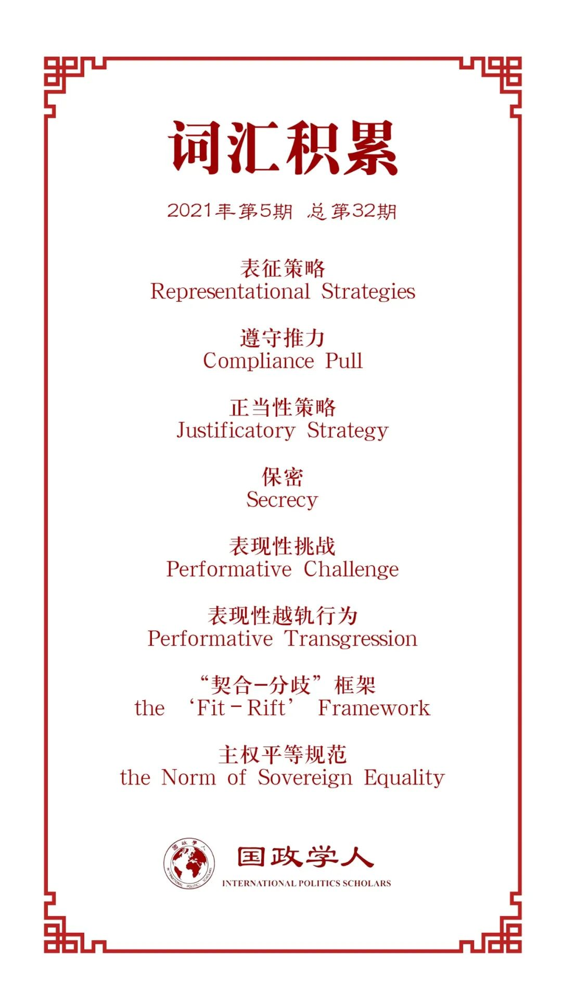

收录于合集

作品简介
【作者】 Megan Price，昆士兰大学国际关系专业博士，现留校任教。主要研究领域包括合法性、正当性、人权机制和国内军事行动。
【编译】 何伊楠（国政学人编译员，中国政法大学国际政治专业硕士）
【校对】 王川
【审核】 扎西旺姆
【排版】 董诗
【美编 】李九阳
【来源】 Megan Price (2021) Norm erosion and Australia’s challenge to the rules-based order, Australian Journal of International Affairs , 75:2, 161-177, DOI:10.1080/10357718.2021.18759
【归档】 《国际关系前沿》2021年第5期，总第32期。
期刊简介
《澳大利亚国际事务杂志》（ Australian Journal of International Affairs ）是澳大利亚知名国际问题研究杂志，发表关于国际政治、社会、经济和法律问题的学术研究，特别关注亚太地区事务。根据2019年的Journal Citation Reports显示，其影响因子为1.097。
**规范侵蚀和澳大利亚对基于规则的秩序的挑战
**
Norm erosion and Australia’s challenge to the rules-based order
Megan Price
内容提要
当前，澳大利亚外交政策制定者越来越强调规则和规范的重要性。这些外交政策声明不仅反映出澳大利亚对中国日益强势姿态的担忧，同时也反映了澳大利亚的信念，即“深度”的无政府状态对于中等国家来说更加安全。然而，澳大利亚同时也在挑战这一国际秩序。2019年10月，澳总理斯科特·莫里森在洛伊国际政策研究所（the Lowy Institute）发表关于“消极全球主义”（negative globalism）的演讲，认为“虽然各国有义务在全球问题上独立合作，但国际制度已经越权，开始‘要求一致’。这样做侵犯了国家主权原则”。
文章导读
01
“基于规则”的国际秩序与澳大利亚的担忧
澳大利亚外交政策制定者所言的“基于规则的秩序”（the rules-based order）一般引用1945年之后的自由国际秩序（the post-1945 Liberal International Order , LIO），意指一套“开放市场、国际制度、合作安全、民主社会、渐进式变革、集体问题解决、共享主权和法治”的实践和价值观。
当前澳大利亚外交政策制定者认为国际秩序正受到威胁，并越发强调规则和规范。Bisley和Schreer指出，《2003年澳大利亚外交与贸易政策白皮书》没有讨论规则或规范的重要性，也没有讨论更广泛的国际秩序的状况。陆克文政府的《2009年国防白皮书》将“基于规则的全球安全秩序”列为澳大利亚的四大战略利益之一。截至2016年，国防白皮书56次提到“基于规则的秩序”。
从外交政策制定者的立场来看，澳大利亚缺乏超级大国的能力，其地理位置使它容易受到胁迫。这种形式的焦虑在澳大利亚的决策中是根深蒂固的，反过来，这种焦虑又促使澳大利亚强调国际秩序的重要性。
在南海问题上，澳大利亚外交政策制定者认为规则和规范的话语在这里具有特殊价值。这种做法既可以让澳大利亚表明不支持中国的行动，同时又避免让人觉得它在针对中国。例如，2020年，澳大利亚政府拒绝中国海洋主张的法律依据。虽然这意味着澳大利亚改变了长期以来的中立立场，但它可以辩称，就其选择立场而言，它只是站在了《海洋法公约》一边。外交政策制定者有些乐观地希望，规则和规范的话语能够影响中国与该地区制度接触的方式，同时尽量减少中国认为自己成为攻击目标的风险。
02
表征策略——对规则和规范的挑战
表征策略（representational strategies）是赋予物质世界的“残忍事实”以意义的策略，通常通过言辞（rhetoric）来实现，但视觉表现和实践也很重要。表征策略很少在政治上保持中立。在（表征策略）呈现世界的过程中，某些行为方式会显得比其他方式更符合逻辑。换言之，表征策略具有行为功能（a performative function）——（表述）行为体做的事情。
根据建构主义理论观点，规则和规范在具有合法性的情况下使行为体认为它们有遵守这些规则的社会义务。换言之，一个合法的规则或规范有一个遵守推力（compliance pull）。行为体可能会选择违反该规则或规范，但如果它保留了某种地位感（sense of standing），该规则或规范就能生存下去。遵守推力会导致违规行为体为自己的行为制定一种正当性策略（justificatory strategy）。即使有人已经违反了它，它也会诱使行为体在未来遵守规则或规范。
不同的表征策略在不同程度上破坏支撑规则和规范完整的合法性。为了说明这一点，首先要考虑正当性策略和保密策略。
1. 正当性策略（justificatory strategy）和保密策略（secrecy）
正当性策略包括两种方法（approach）：（1）行为体可能认为其实践符合规则或规范。例如，以保护的责任原则（Responsibility to Protect, R2P）为名义的干预被解释为与主权的组织原则一致。（2）行为体可能会辩称他们面临着减轻处罚的情况，这通常与例外主义政治（the politics of exceptionalism）相关联。例如，Walzer认为，在纳粹占领欧洲等极端紧急状态（the supreme emergency）下，行动者有理由暂停战争法。在正当性策略下，规则或规范在很大程度上保留了其主体间性地位（intersubjective standing）。
保密策略是政治行为体试图掩盖违法行为的策略。当行为体不想被理解为违反者，但又找不到合理的理由时，通常就会采取保密。保密的做法本身并不对规则和规范的地位构成严重挑战，正当性策略亦然。
2. 不遵守规范（non-compliance）
当违规行为（transgressions）伴随着对规范的“正义”（righteousness）的质疑时，不遵守规范的行为就会成为对规则或规范严峻的挑战。冰岛和挪威对国际禁止捕鲸规范的有效性提出了质疑，理由是其与它们可持续利用国内资源的权利相冲突。虽然这些国家并没有废除捕鲸禁令，但它们成功地使争议话语变得更激进。
3. 攻击规则或规范的基本原则
攻击规则或规范的基本原则比仅仅不遵守更具破坏性。例如，行为体修改法律分类的含义或者寻求重新定义其适用范围对法律的地位进行间接而尖锐的挑战：在所谓的全球反恐战争中，美国律师对国际人道主义法（International Humanitarian Law, IHL）采用“修正主义”（revisionist）方法，将被俘的敌人描述为“非法战斗人员”（unlawful combatants）而非公认的法律术语“前战斗人员”（former combatants），试图通过设计新类别逃避在《日内瓦公约》下对“前战斗人员”的法律义务。在对国际人道主义法的“否认”态度中，俄罗斯只是驳斥有关其支持乌克兰叛军组织的指控，这些反叛组织与一系列违反国际人道主义法的行为有关。通过这种否定态度，俄罗斯创造了一个国际社会没有机会根据国际人道主义法条款评估其行为的“现实”。
对规则或规范的挑战一开始可能是一种保密行为，然后随着时间推移会变成一种表现性挑战（performative challenge）。 当布什政府的“强化审讯”（ ‘enhanced interrogation’）实践被公开后，他们从保密策略转向了“几个害群之马”（ ‘a few bad apples’）的叙述，并转向了合法的话语。在这一论述中，酷刑规范被视为美国安全的一种障碍。换言之，如果表征策略需要从根本上攻击或改变规则或规范的特征，它们会转向使该规则或规范失去地位。
此外，作者指出本文的“国际”（international）意指国家、非国家行为体和制度之间的关系，这些关系超越并构成了领土的界限。要评估特定表现性挑战的性质和效果，打开国家的黑箱是有意义的。
对于国际政治的转型（transformation），正如Evers所言，行为体有时出于改变国际秩序的明确目的而违反规则和规范。作者警告说，这开启了一种可能性，即表现性越轨行为（performative transgressions）可以为正义的目的服务。
综上所述，不遵从规则或规范可能对其不利。然而，由于规则和规范的遵守推力源自合法性，挑战这些规则和规范的表征策略尤其具有破坏性。
03
“契合-分歧”框架
作者以“契合-分歧”框架（the ‘fit–rift’ framework）进一步说明，在政治领导人试图表现性地（performatively）挑战国际规范的情况下，可能会导致规范的侵蚀。值得注意的是，“契合- 分歧”框架可以指导分析者理解领导人存在哪些政治动机，但它不能确切地告诉分析者为什么政治领导人选择一种行动方案而不是另一种。
1. 契合（fit）
如果规则或规范与国内受众的文化背景之间存在一种恰当的“契合”，政治领导人就能更容易地向选民“推销”（sell）规范遵从性。对公投之后印尼和东帝汶之间的暴力行为，澳大利亚做出干预的决定。尽管这会损害澳与印尼之间的关系，但时任霍华德政府发现公众对东帝汶自决要求的支持日益增加，在向澳大利亚公众“推销”干预行动时，政府的立场相对安全。澳大利亚政府在国内支持自决和人权的原则是一种容易的“推销”，因为它与公众的期望相符。
2. 分歧（rift）
一旦存在潜在的分歧，政治领导人就面临着切实违反规则或规范的诱惑。当社会（communities）受到外部行为体的羞辱时，潜在的分歧往往会出现。Adler- Nissen和Zarakol指出，西方国家的公众容易认为自己是国际秩序的创造者和支持者。在这个基础上，让他们成为被批评的对象是没有意义的。在澳大利亚，这种情绪围绕着对外援助的话题。澳大利亚人不仅普遍认为澳大利亚对外捐助的数额过高，而且认为澳大利亚的捐助太慷慨了。当澳大利亚被国际机构，尤其是太平洋岛国羞辱时，人们会认为其他国家的行为是不领情的。因此，当莫里森受到联合国人权事务专员和太平洋岛国批评其气候政策和寻求庇护者政策（asylum seeker policies）时，他会感到一种要切实挑战国际秩序特征的强烈诱惑，否则他将被迫听取那些（“羞辱的”）声音。
导致潜在分歧的情况涉及三个条件： 公众的价值观（the public’s values）、国内观众（the audiences）和政治领导人（political leaders）本身。
首先，分歧最有可能发生在一个国家既定的信仰、身份和象征周围。文化领域的这些固定特征为行为体提供了随时“兜售”政治行动的资源，也为政治行为体提供了拉拢对手的工具；其次，契合和分歧都不能影响全部的公众；最后，潜在的分析能吸引政治行为体，其立场在某种程度上取决于公众的支持。因此，拥有制度上地位的澳大利亚公职人员不太愿意让国内选民与国际秩序作对，当政治领导人试图挑战国际秩序以谋求国内政治利益时，公职人员发现自己受到排挤就不足为奇。在莫里森在洛伊国际政策研究所发表“消极的全球主义”演讲之前，并没有征求澳大利亚外交事务和贸易部（Department of Foreign Affairs and Trade, DFAT）的意见。
寻求利用分歧的政治领导人会由于国内和国际两方面原因面临严峻挑战： 一方面，领导人可能培育一种未来对国际规范更具敌意的国内文化；另一方面，借助“昂贵信号”（costly signal）的概念，信号昂贵性（signal costliness）影响威胁的可信度。公开发布威胁是代价高昂的，在这种情况下如果政治领导人让步，就有可能招致消极的公众反应或“成本”（cost）。在本文的“契合- 分歧”框架中，政府在技术上已经由于避开表现性地违反国际秩序的诱惑而招致国内“成本”。政府愿意承担招致国内“成本”的风险，这表明他们希望优先考虑既定规则或规范的稳定性。信号增强了该规则或规范的国际主体间性地位。
澳大利亚对国际规则或规范的表现性挑战还破坏了其外交政策品牌战略的可信度。历届政府都把澳大利亚标榜为一个积极主动的国际参与者，让国内选民反对基于规则的秩序的某一方面的行为，无助于加强这种品牌战略。在相对温和的批评前，它会让人们担心一个国家将会自我转变，背离国际秩序。
04
重塑莫里森政府的政策方法（approach）
在洛伊国际政策研究所的演讲中，莫里森把他的演讲主要描述为捍卫主权原则（a defence of the principle of sovereignty） 。作者由此确定，他挑战了主权平等的国际规范。
**
**
作者认为，尽管当代国际政治体系存在着一系列违背主权平等原则的主张（如联合国安理会常任理事国的特权），但主权平等规范（the norm of sovereign equality）明确构成了国际政治的进程。主权平等规范包括两方面含义：（1）支持不干涉原则，所有国家都受法律保护；（2）它对Ian Clark所称的“短视”的实践（‘inward looking’ practices）有影响。“短视”的实践是指关切各国内政的国际实践，同时涉及各国共同的规范性承诺。澳大利亚经常参与与其他国家有关的内向型国际政治活动：作为联合国安理会的成员，澳大利亚主持三个制裁委员会，并在有关阿富汗的决议上拥有“笔杆”（pen holder）地位。作为联合国人权理事会成员，澳大利亚在普遍定期审议中对其他国家进行评估，起草关于其他国家内政的联合声明，并就这些问题进行投票表决。而莫里森的演讲抱怨“消极的全球主义胁迫性地寻求从一个往往边界不清的无国界全球社会强加授权”，这种侵蚀主权平等规范的可能令人不安。
作者提出一个表征策略频谱（spectrum）重新确定莫里森的政策方法。
在频谱的一端，是确定政府准备承担国内成本，遵守国际规则或规范的表征策略。这种做法可能会招致国内选民的批评，但作为一种信号，这种方法在最大程度上巩固了规范的国际主体间性地位。
在频谱的中间，是一些试图避免在规范的价值上表明明显的立场的政治策略。
在频谱的最后一端，是试图利用国际规则或规范与国内选民之间的潜在分歧的策略。莫里森以“全球主义官僚制” （globalist bureaucracy）的概念来回应国际批评，通过挑战主权平等原则来应对国际羞辱进程，他的方法可以位于频谱这一端。
作者强调，这一框架并不是为了阻止领导人利用国内选民的文化资源调和国际秩序和公众之间的分歧，而是指导政治领导人在受表现性越轨行为（performative transgression）诱惑时的即时分析和决策。而且理论上，政治领导人可以同时追求长期和短期战略。
05
结论
理解外交政策言辞与规则规范完整性关系的“契合-分歧”框架既可以解释和预测行为体违反国际规范的表现性越轨行为，也可以解释“契合”的实例。
尽管莫里森政府强调了规则和规范的价值，但在洛伊国际政策研究所的演讲中，他挑战了主权平等的规范。谨慎的政治领导人应该在表征策略频谱中找到一个点使他们既能避免侵蚀一项有价值的规则或规范，又不会招致政治上不可持续的国内成本。
总的来说，如果澳大利亚的政治领导人担心未来的规则和规范，最好从古典现实主义者的书中学习并遵守负责任的言论伦理。
译者评述
作为中等国家，澳大利亚缺乏超级大国的能力，其地理位置使它容易受到胁迫。这种长期以来的焦虑促使澳大利亚强调维护包含“开放市场、国际制度、合作安全、民主社会、渐进式变革、集体问题解决、共享主权、和法治”的实践和价值观的国际秩序。
由于规则或规范具有遵守推力，行为体为自己的行为制定正当性策略。即使有人已经违反了它，它也会诱使行为体在未来遵守规则或规范，这正是澳大利亚外交决策者利用表征策略挑战国际规范或原则的逻辑。然而，根据作者的“契合- 分歧”框架，利用国内公众和国际规范之间潜在的分歧在国内可能会滋生对国际规范更具敌意的国内文化，在国际可能会破坏了其外交政策品牌战略的可信度。
莫里森“消极全球主义”演讲对“契合- 分歧”框架的验证再次说明了这一点——“消极全球主义”演讲对国际秩序的挑战一方面让国内选民担心长期明确支持基于规则的制度的澳大利亚将会自我转变，背离国际秩序；另一方面，尽管澳大利亚外交事务和贸易部自称，“根据绩效衡量标准，澳大利亚‘加强基于规则的国际秩序’的努力正在‘轨道上’”，但对主权平等原则的尖锐挑战，无疑是对国际规范的侵蚀。
作者提出，无论是长期还是短期决策，只要领导人在考虑不同种表征策略将如何影响规则或规范的完整性的频谱中找到合适的点，安排其可选择的优先事项的先后次序，就能达到既不侵蚀国际规则或规范，又不会招致政治上不可持续的国内成本的结果。但译者认为，在“契合- 分歧”框架中，政府利用国内文化与国际规范的契合可能招致国际社会对其正当性的质疑，利用国内选民与国际规范的分歧则可能产生持续的“观众成本”。而且由于社会的复杂性，在不同议题下会有不同的契合和分歧，有时议题间还有可能重叠，这在长期决策中表现得更为明显。因此，表征策略频谱在实践中是否必然产生最理想的后果，以及议题重叠时如何根据频谱决定优先事项，仍待进一步确认。
词汇整理

文章观点不代表本平台观点，本平台评译分享的文章均出于专业学习之用, 不以任何盈利为目的，内容主要呈现对原文的介绍，原文内容请通过各高校购买的数据库自行下载。
好好学习，天天“在看”
国政学人
支持学术公益与知识传播
微信扫一扫赞赏作者 __赞赏
已喜欢，对作者说句悄悄话
取消 __
发送给作者
发送
最多40字，当前共字
上一页 1/3 下一页
长按二维码向我转账
支持学术公益与知识传播
受苹果公司新规定影响，微信 iOS 版的赞赏功能被关闭，可通过二维码转账支持公众号。